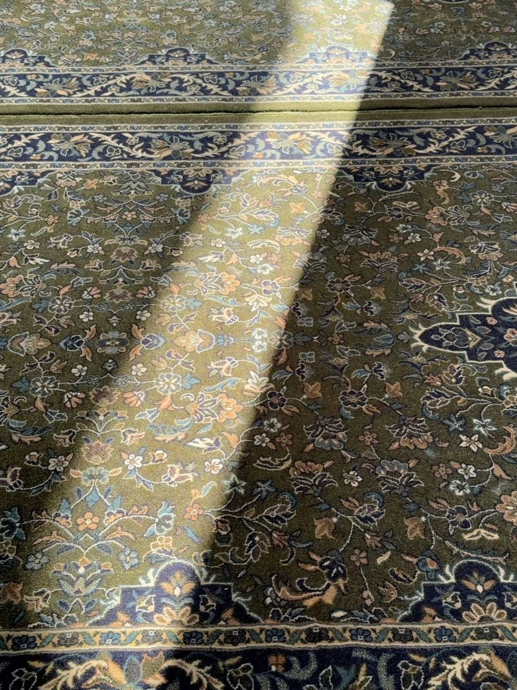
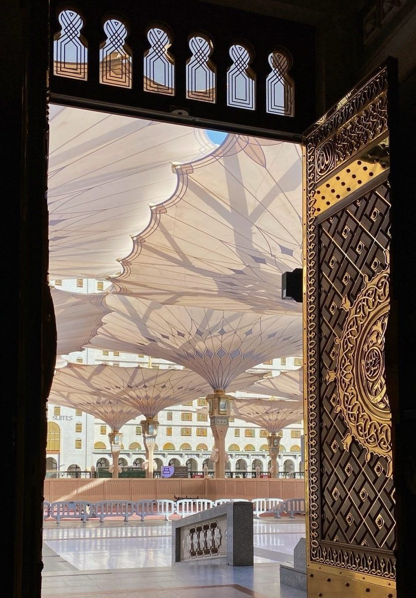
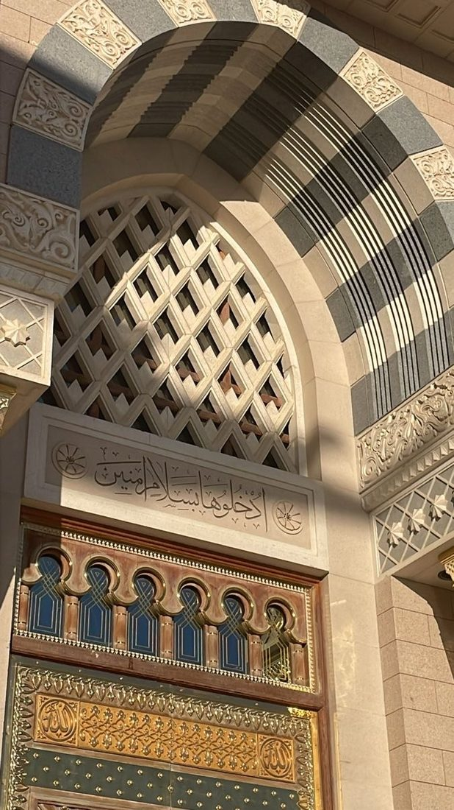
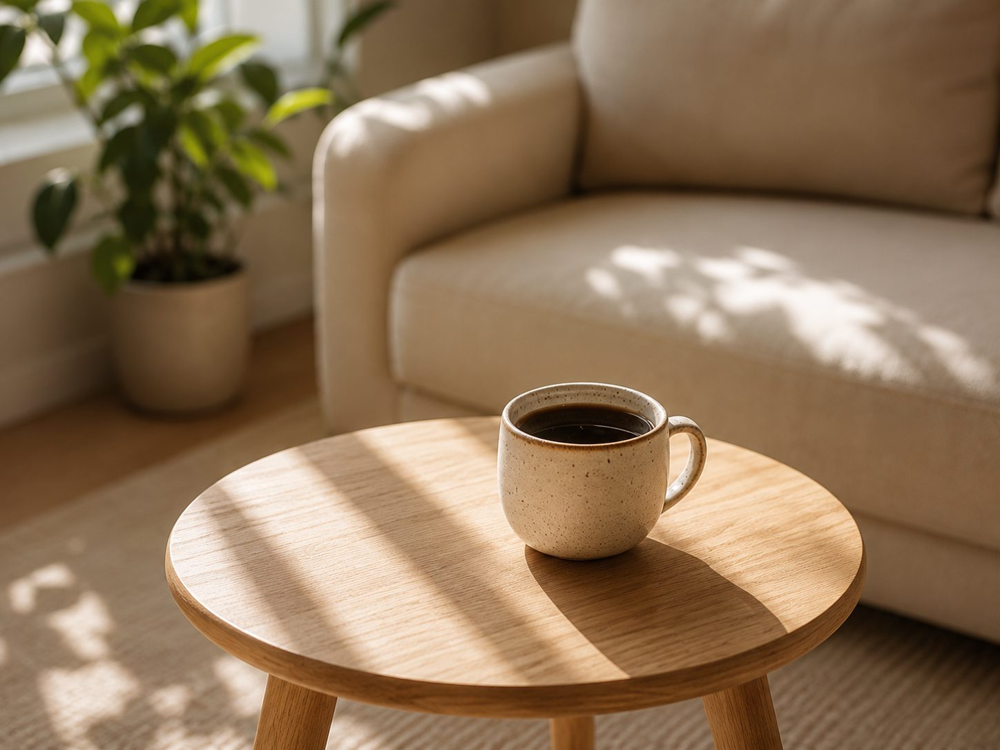
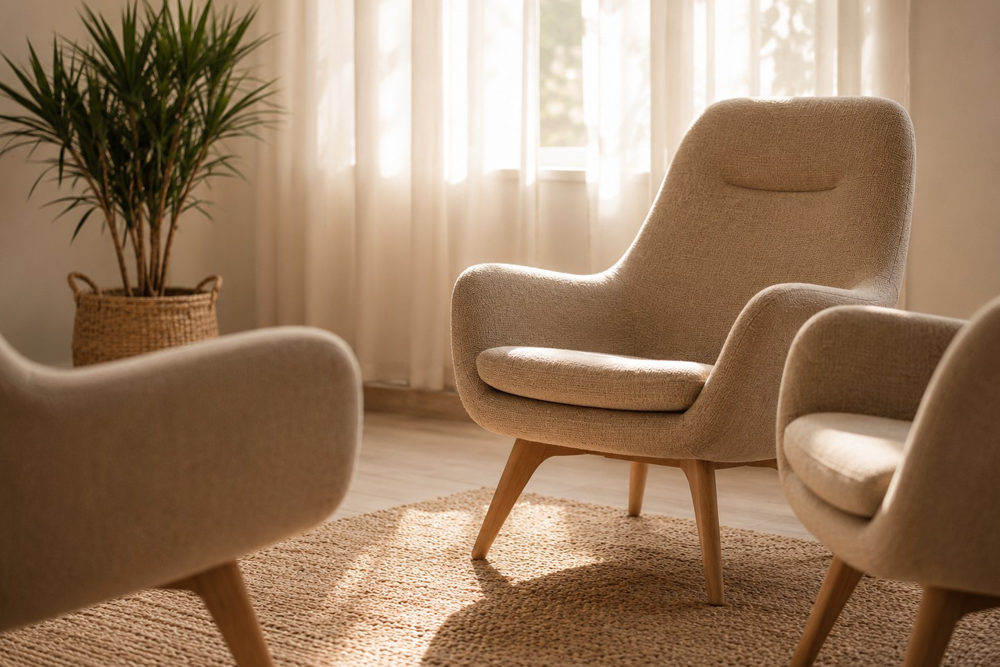

Rihlaturruh
› De reis van de ziel ‹
Een plek voor islamitische reflectie, geestelijke verzorging, publicaties en zorgvuldig ontwikkelde materialen die bijdragen aan bezinning, betekenis en innerlijke rust.
Wat je hier kunt vinden
Begeleiding
Persoonlijke geestelijke verzorging vanuit islamitisch perspectief.
Lees meer → In ontwikkelingMaterialen
Werkbladen, posters en digitale hulpmiddelen voor persoonlijk en professioneel gebruik.
Meer hierover →Publicaties
Samenvattingen van scripties, onderzoek en het dashboard van het masteronderzoek.
Bekijk de publicaties →Onze visie
Wij geloven dat geestelijke groei begint wanneer er ruimte ontstaat voor stilte, reflectie en oprechte verbinding met Allah.
Rihlaturruh wil bijdragen aan die reis door kennis, bezinning en praktische hulpmiddelen aan te bieden die mensen ondersteunen in het dagelijks leven, zowel persoonlijk als professioneel.

Rihlaturruh betekent: de reis van de ziel. Een uitnodiging om niet alleen verder te gaan, maar ook stil te staan.
Over Rihlaturruh
Rihlaturruh betekent de reis van de ziel.
Iedere ziel bewandelt een eigen weg. Een weg waarop momenten van vreugde, beproeving, groei en bezinning elkaar afwisselen. Tijdens deze reis ontstaat soms de behoefte om stil te staan, richting te vinden of woorden te geven aan wat zich in het hart afspeelt.
Rihlaturruh is ontstaan vanuit de wens om ruimte te bieden voor die innerlijke reis. Vanuit een islamitisch-theologische achtergrond en professionele ervaring in de islamitische geestelijke verzorging ontwikkelt Rihlaturruh materialen, publicaties en begeleiding die bijdragen aan reflectie, betekenisgeving en een bewuste verbinding met Allah.

Onze visie
Waar verdieping begint
Wij geloven dat ware groei begint in het hart. Wanneer we bewust leren stilstaan bij onze ervaringen, onze relatie met Allah en onze plaats in het leven, ontstaat ruimte voor innerlijke rust, veerkracht en betekenis.
Vanuit deze overtuiging ontwikkelt Rihlaturruh zorgvuldig vormgegeven materialen, biedt het geestelijke verzorging en deelt het kennis en onderzoek die uitnodigen tot reflectie, bewustwording en verdieping. Elk onderdeel draagt bij aan hetzelfde doel: mensen ondersteunen tijdens hun eigen reis van de ziel.
Alles wat binnen Rihlaturruh wordt ontwikkeld, vindt zijn inspiratie in de Koran, de authentieke Soennah en de rijke islamitische traditie van tazkiyat an-nafs (de zuivering van de ziel). Door geloof, wetenschap en praktijk met elkaar te verbinden, wil Rihlaturruh bijdragen aan een bewuste en betekenisvolle levenshouding.

Voor wie is Rihlaturruh?
Voor iedereen die verdieping zoekt
Rihlaturruh is er voor iedereen die verlangt naar verdieping vanuit een islamitisch perspectief. Door middel van geestelijke verzorging, reflectiematerialen en publicaties wil Rihlaturruh bijdragen aan bezinning, kennis en persoonlijke groei.
Rihlaturruh richt zich onder andere op:
- Mensen die op zoek zijn naar persoonlijke reflectie en spirituele ontwikkeling
- Islamitische geestelijke verzorgers en andere professionals
- Onderwijs- en educatieprofessionals
- Zorg- en welzijnsinstellingen
- Iedereen die islamitische kennis wil verbinden met het dagelijks leven
De materialen, publicaties en begeleiding worden geleidelijk beschikbaar in meerdere talen, waaronder Nederlands en Turks. Waar passend zullen onderdelen ook in het Arabisch worden aangeboden.

Achter Rihlaturruh
Mijn naam is Havva.
Ik ben islamitisch theoloog en islamitisch geestelijk verzorger.
Ik behaalde een Bachelor of Arts (BA) in Islamitische Theologie, gevolgd door een Master of Arts (MA) in Islamitische Geestelijke Verzorging.
Een bijzonder vormende periode in mijn leven bracht ik door in Al-Madinah al-Munawwarah (Medina). Daar heb ik gewoond, gestudeerd en gewerkt. De nabijheid van de Masjid an-Nabawi, de dagelijkse omgang met kennis en de spirituele omgeving van Medina hebben mijn visie op geloof, zielzorg en geestelijke verzorging blijvend gevormd.
Die ervaringen vormen vandaag de dag de inspiratie achter Rihlaturruh. Vanuit mijn achtergrond ontwikkel ik materialen die mensen helpen stil te staan bij hun eigen levensreis — materialen die uitnodigen tot reflectie, betekenisgeving en een diepere verbinding met Allah.
Mijn verlangen is dat Rihlaturruh mag uitgroeien tot een plek waar mensen niet alleen kennis opdoen, maar ook rust vinden, hoop hervinden en met meer bewustzijn hun eigen reis van de ziel voortzetten.
Onze kernwaarden
Authentiek
Geworteld in de Koran en de authentieke Soennah.
Diepgaand
Ruimte voor bezinning, reflectie en betekenis.
Toepasbaar
Praktische materialen die aansluiten bij het dagelijks leven.
Professioneel
Ontwikkeld vanuit islamitische theologie en geestelijke verzorging.
Barmhartig
Met aandacht voor de mens achter het verhaal.
Iedere ziel legt haar eigen reis af.
Mijn wens is dat Rihlaturruh een metgezel mag zijn op die reis: een plek waar kennis het hart raakt, waar reflectie leidt tot bewustwording en waar de verbinding met Allah steeds opnieuw mag worden versterkt.
Diensten & Aanbod
Wat Rihlaturruh biedt
Vanuit een islamitisch-theologische achtergrond biedt Rihlaturruh persoonlijke begeleiding, lessen, lezingen en workshops — met aandacht voor geloof, reflectie en verdieping.
sinds 2020
Arabisch & Tadjwied
gegeven
ontwikkeld
Dienst 01 · Persoonlijke begeleiding
Begeleiding
Geestelijke verzorging vanuit een islamitisch perspectief — een veilige ruimte voor uw verhaal, levensvragen en reflectie.
Lees meer over begeleiding →Dienst 02 · Onderwijs
Lessen — Arabisch & Tadjwied
Arabisch leren lezen en de Koran leren reciteren, voor kinderen en volwassenen, individueel of in kleine groepen.
Bekijk het lesaanbod →Dienst 03 · Kennis & verdieping
Lezingen voor dames
Nederlandstalige lezingen sinds 2020, over thema’s die het hart raken. Bekijk het overzicht van eerder gegeven lezingen.
Bekijk alle lezingen →Dienst 04 · Praktijkgericht
Workshops
Praktijkgerichte workshops zoals Workshop Dodenwassing, Ik Leer Bidden voor Kinderen en Zaalvoetbal voor Meisjes.
Bekijk de workshops →Iedere levensreis kent momenten waarop het helpend is om samen stil te staan.
Ik nodig u uit om contact op te nemen. Ik kijk ernaar uit om met u mee te denken.
Materialen
Materialen die uitnodigen tot bezinning
De reflectiematerialen van Rihlaturruh zijn ontwikkeld om ruimte te creëren voor reflectie, bewustwording en betekenisgeving vanuit islamitisch perspectief.
Deze materialen worden op dit moment zorgvuldig ontwikkeld en zijn nog niet beschikbaar. Hieronder alvast een voorproefje van wat u kunt verwachten.
Wat Rihlaturruh ontwikkelt
Reflectiewerkbladen
Werkvormen die uitnodigen tot zelfreflectie en verdieping.
Posters
Visuele reminders voor inspiratie en bezinning in het dagelijks leven.
E-books
Verdiepende uitgaven over thema’s die raken aan het hart en de ziel.
Digitale hulpmiddelen
Digitale werkbladen, invulbare PDF’s en reflectie-oefeningen voor flexibel gebruik.
Voor persoonlijk én professioneel gebruik
De materialen worden ontwikkeld voor persoonlijke reflectie en zullen daarnaast ingezet kunnen worden door islamitisch geestelijk verzorgers, docenten, zorgprofessionals en begeleiders die werken met moslims. Afhankelijk van de inhoud worden ze toepasbaar binnen onderwijs, geestelijke verzorging en de zorg — en komen ze geleidelijk beschikbaar in meerdere talen, waaronder Nederlands en Turks.
Met zorg ontwikkeld
Iedere uitgave is gebaseerd op islamitische bronnen en geschreven met aandacht voor reflectie, toegankelijkheid en praktische toepasbaarheid. Het doel is niet alleen om kennis over te dragen, maar ook om stil te staan bij de vragen, ervaringen en momenten die deel uitmaken van de reis van de ziel. Wij geloven dat reflectie begint met vertragen.
Niet ieder antwoord begint met spreken. Soms begint het met stil durven staan.
Blijf op de hoogte
De reflectiematerialen zijn in ontwikkeling en volgen binnenkort. Wilt u een seintje zodra ze beschikbaar zijn, of vroege toegang?
Laat het mij wetenContact
Heeft u een vraag, wilt u meer informatie of bent u benieuwd wat Rihlaturruh voor u of uw organisatie kan betekenen?
U bent van harte welkom om contact op te nemen. Ik neem de tijd om ieder bericht zorgvuldig te lezen en streef ernaar zo spoedig mogelijk te reageren.

Contactgegevens
Contactformulier
Heeft u een vraag of wilt u meer informatie? Vul onderstaand formulier in. Ik neem zo spoedig mogelijk contact met u op.
Samenwerken
Rihlaturruh werkt graag samen met organisaties en professionals die zich inzetten voor zingeving, educatie, geestelijke verzorging en de ontwikkeling van islamitische reflectiematerialen.
Samenwerkingen zijn onder andere mogelijk met:
- zorginstellingen;
- onderwijsinstellingen;
- moskeeën;
- maatschappelijke organisaties;
- islamitische geestelijk verzorgers;
- andere professionals binnen het sociale domein.
Voor samenwerkingen of zakelijke vragen kunt u vrijblijvend contact opnemen.
Iedere ontmoeting begint met een eerste stap.
Ik zie ernaar uit om kennis met u te maken en samen te verkennen wat Rihlaturruh voor u kan betekenen.
Publicaties
Kennis delen, verdieping brengen
De onderzoeksresultaten van beide scripties zijn nu interactief te bekijken. Toegankelijke samenvattingen volgen stap voor stap.
Masterscriptie · Onderzoeksresultaten
Psycho-spirituele processen bij Nederlandse moslims
Een interactief overzicht van de resultaten van de enquête naar geloofsbeleving, zingeving en welbevinden.
Bekijk de resultaten →Bachelorscriptie · Onderzoeksresultaten
De Sportieve Moslimvrouwen
Een interactief overzicht van de resultaten van de enquête onder sportieve moslimvrouwen: beleving, motivatie en welbevinden.
Bekijk de resultaten →Onderzoek & samenvattingen
Toegankelijke samenvattingen en verdieping bij het onderzoek rond geloof, zingeving en geestelijke verzorging worden hier stap voor stap toegevoegd.
Kennis raakt pas werkelijk als zij het hart bereikt.